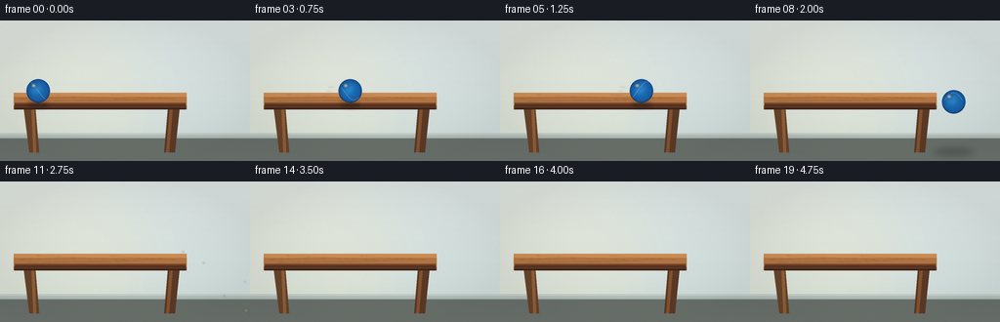
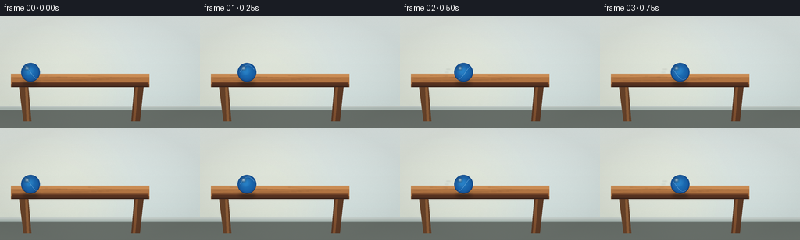
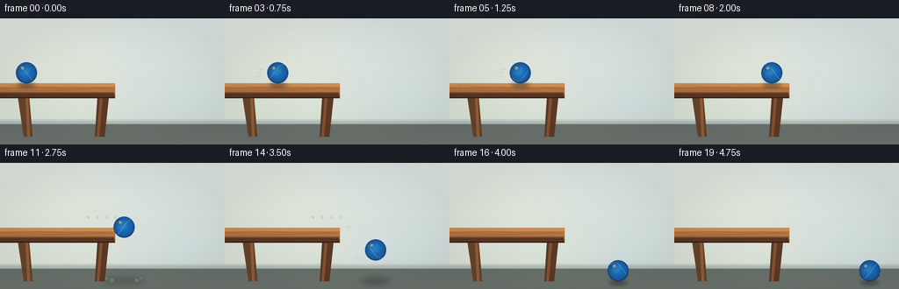
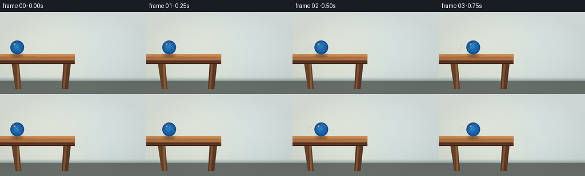

CODING AGENTS AS PIXEL WORLD MODELS
traex/DeepSeek-V4.1-Flash · instance_preservation_0020
点击播放 · 原生 RGB 像素
逐轮保存的候选
回放视频、检查图与代码变化。
每份候选均可单独播放。实际图片检查记录在下方工具轨迹中。
候选 01播放与检查图
点击播放 · 原生 RGB 像素

展开代码变化
--- 上一保存版本
+++ 本次保存版本
@@ -0,0 +1,334 @@
+"""Render a blue ball rolling off a table as a short RGB animation."""
+
+from __future__ import annotations
+
+import math
+from pathlib import Path
+
+import numpy as np
+from PIL import Image, ImageDraw, ImageFilter
+
+import artifact_io
+
+
+WIDTH = 256
+HEIGHT = 144
+FRAMES = 20
+FPS = 4.0
+SCALE = 4
+
+TABLE_TOP = 84.0
+TABLE_EDGE = 184.0
+FLOOR_Y = 135.0
+BALL_RADIUS = 12.0
+
+
+def smoothstep(value: float) -> float:
+ value = min(1.0, max(0.0, value))
+ return value * value * (3.0 - 2.0 * value)
+
+
+def rounded_line(draw: ImageDraw.ImageDraw, xy, fill, width):
+ draw.line(xy, fill=fill, width=width, joint="curve")
+ radius = width // 2
+ for x, y in (xy[0], xy[-1]):
+ draw.ellipse((x - radius, y - radius, x + radius, y + radius), fill=fill)
+
+
+def make_background() -> Image.Image:
+ """Paint a quiet studio room with a sunlit wall and warm wooden table."""
+ s = SCALE
+ image = Image.new("RGB", (WIDTH * s, HEIGHT * s), (213, 224, 221))
+ draw = ImageDraw.Draw(image, "RGBA")
+
+ # Soft wall wash and a warm patch of window light behind the table.
+ for y in range(HEIGHT * s):
+ v = y / (HEIGHT * s)
+ color = (
+ int(207 + 12 * (1.0 - v)),
+ int(221 + 7 * (1.0 - v)),
+ int(219 + 7 * (1.0 - v)),
+ )
+ draw.line((0, y, WIDTH * s, y), fill=color)
+
+ glow = Image.new("L", image.size, 0)
+ glow_draw = ImageDraw.Draw(glow)
+ glow_draw.ellipse((-34 * s, 8 * s, 147 * s, 168 * s), fill=58)
+ glow_draw.ellipse((7 * s, 18 * s, 96 * s, 118 * s), fill=50)
+ glow = glow.filter(ImageFilter.GaussianBlur(25 * s))
+ warm = Image.new("RGB", image.size, (255, 239, 192))
+ image.paste(warm, (0, 0), glow)
+
+ # Muted vertical wall texture, kept low contrast so the ball remains focal.
+ rng = np.random.default_rng(12)
+ texture = rng.normal(0.0, 1.9, (HEIGHT * s, WIDTH * s, 1))
+ texture = np.repeat(texture, 3, axis=2)
+ pixels = np.asarray(image, dtype=np.float32) + texture
+ image = Image.fromarray(np.clip(pixels, 0, 255).astype(np.uint8))
+ draw = ImageDraw.Draw(image, "RGBA")
+
+ # Faint baseboard gives the room depth without competing with the action.
+ draw.rectangle((0, 116 * s, WIDTH * s, 121 * s), fill=(178, 190, 185))
+ draw.line((0, 116 * s, WIDTH * s, 116 * s), fill=(196, 205, 201, 255), width=2 * s)
+ draw.line((0, 121 * s, WIDTH * s, 121 * s), fill=(143, 156, 151, 255), width=2 * s)
+
+ # Floor is a low, dark plane; a slight perspective keeps it from reading flat.
+ draw.rectangle((0, 121 * s, WIDTH * s, HEIGHT * s), fill=(105, 112, 106))
+ for y in range(121, HEIGHT):
+ shade = int(102 + (y - 121) * 0.65)
+ draw.line((0, y * s, WIDTH * s, y * s), fill=(shade, shade + 7, shade + 2, 255))
+
+ # Table legs first, then the top so the silhouette stays clean.
+ left_leg = [(24 * s, 88 * s), (36 * s, 88 * s), (40 * s, 135 * s), (30 * s, 135 * s)]
+ right_leg = [(172 * s, 88 * s), (184 * s, 88 * s), (179 * s, 135 * s), (168 * s, 135 * s)]
+ draw.polygon(left_leg, fill=(104, 67, 42, 255))
+ draw.polygon(right_leg, fill=(91, 57, 37, 255))
+ draw.polygon([(32 * s, 88 * s), (35 * s, 88 * s), (37 * s, 135 * s), (34 * s, 135 * s)],
+ fill=(143, 95, 57, 255))
+ draw.polygon([(174 * s, 88 * s), (177 * s, 88 * s), (173 * s, 135 * s), (170 * s, 135 * s)],
+ fill=(130, 82, 49, 255))
+
+ # Tabletop: a warm walnut slab with bevels and long, understated grain.
+ draw.rectangle((14 * s, 76 * s, 191 * s, 91 * s), fill=(116, 71, 42, 255))
+ draw.rectangle((14 * s, 74 * s, 191 * s, 87 * s), fill=(177, 116, 66, 255))
+ draw.rectangle((14 * s, 74 * s, 191 * s, 78 * s), fill=(202, 140, 84, 255))
+ draw.line((15 * s, 85 * s, 190 * s, 85 * s), fill=(119, 72, 43, 255), width=2 * s)
+ draw.line((15 * s, 87 * s, 190 * s, 87 * s), fill=(88, 51, 33, 255), width=3 * s)
+ draw.line((15 * s, 90 * s, 190 * s, 90 * s), fill=(62, 37, 27, 255), width=2 * s)
+
+ grain = Image.new("RGBA", image.size, (0, 0, 0, 0))
+ grain_draw = ImageDraw.Draw(grain)
+ grain_specs = [
+ (18, 80, 86, 78, 123, 52),
+ (38, 76, 132, 80, 139, 56),
+ (88, 82, 165, 79, 170, 58),
+ (26, 83, 104, 82, 112, 51),
+ (113, 76, 180, 80, 154, 50),
+ ]
+ for x1, y1, x2, y2, curve, alpha in grain_specs:
+ points = []
+ for i in range(25):
+ t = i / 24
+ x = x1 + (x2 - x1) * t
+ y = y1 + (y2 - y1) * t + math.sin(t * math.pi) * (curve - 120) * 0.018
+ points.append((x * s, y * s))
+ grain_draw.line(points, fill=(80, 45, 29, alpha), width=max(1, s // 2))
+ grain = grain.filter(ImageFilter.GaussianBlur(0.45 * s))
+ image = Image.alpha_composite(image.convert("RGBA"), grain).convert("RGB")
+ return image
+
+
+def ball_position(frame: int) -> tuple[float, float, float, bool]:
+ """Return center x/y, accumulated roll angle, and airborne state."""
+ # The first 1.75 seconds are a steady roll across the tabletop.
+ t = frame / FPS
+ start_x = 39.0
+ edge_center_x = TABLE_EDGE + BALL_RADIUS * 0.28
+ roll_duration = 1.75
+ roll_distance = edge_center_x - start_x
+ if t <= roll_duration:
+ p = t / roll_duration
+ x = start_x + roll_distance * p
+ y = TABLE_TOP - BALL_RADIUS
+ angle = -(x - start_x) / BALL_RADIUS
+ return x, y, angle, False
+
+ # Leaving the edge: retain horizontal speed and fall under gravity.
+ fall_t = t - roll_duration
+ vx = roll_distance / roll_duration
+ x = edge_center_x + vx * fall_t
+ y0 = TABLE_TOP - BALL_RADIUS
+ floor_center = FLOOR_Y - BALL_RADIUS
+ gravity = 360.0
+ y = y0 + 0.5 * gravity * fall_t * fall_t
+ airborne = True
+
+ # One small, damped bounce on the floor.
+ impact_t = math.sqrt(max(0.0, (floor_center - y0) * 2.0 / gravity))
+ if fall_t >= impact_t:
+ since_impact = fall_t - impact_t
+ rebound_v = -132.0
+ y_bounce = floor_center + rebound_v * since_impact + 0.5 * gravity * since_impact ** 2
+ bounce_duration = 2.0 * abs(rebound_v) / gravity
+ if since_impact <= bounce_duration:
+ y = y_bounce
+ else:
+ y = floor_center
+ airborne = False
+
+ angle = -(x - start_x) / BALL_RADIUS
+ return x, y, angle, airborne
+
+
+def draw_ball(image: Image.Image, cx: float, cy: float, angle: float, alpha: int = 255):
+ """Draw a shaded blue rubber ball with a pale curved seam."""
+ s = SCALE
+ radius = BALL_RADIUS * s
+ center = (cx * s, cy * s)
+ ball = Image.new("RGBA", image.size, (0, 0, 0, 0))
+ draw = ImageDraw.Draw(ball)
+ x, y = center
+ draw.ellipse((x - radius, y - radius, x + radius, y + radius),
+ fill=(19, 55, 109, alpha))
+
+ # Concentric shading gives the ball a rubbery, rounded volume.
+ for step in range(18, 0, -1):
+ f = step / 18.0
+ r = radius * (0.18 + 0.82 * f)
+ shade = (
+ int(22 + 18 * (1.0 - f)),
+ int(77 + 54 * (1.0 - f)),
+ int(142 + 60 * (1.0 - f)),
+ alpha,
+ )
+ offset = -radius * 0.15 * (1.0 - f)
+ draw.ellipse((x - r + offset, y - r + offset, x + r + offset, y + r + offset),
+ fill=shade)
+
+ # A crescent of cool reflected light on the lower right.
+ reflected = Image.new("RGBA", image.size, (0, 0, 0, 0))
+ ref_draw = ImageDraw.Draw(reflected)
+ ref_draw.ellipse((x - radius * 0.94, y - radius * 0.94,
+ x + radius * 0.94, y + radius * 0.94),
+ fill=(18, 104, 181, 95))
+ mask = Image.new("L", image.size, 0)
+ mask_draw = ImageDraw.Draw(mask)
+ mask_draw.ellipse((x - radius * 0.83, y - radius * 0.83,
+ x + radius * 0.83, y + radius * 0.83), fill=255)
+ mask_draw.ellipse((x - radius * 1.02, y - radius * 1.02,
+ x + radius * 0.38, y + radius * 0.35), fill=0)
+ reflected.putalpha(Image.composite(reflected.getchannel("A"), Image.new("L", image.size, 0), mask))
+ ball = Image.alpha_composite(ball, reflected)
+
+ # A subtle seam rotates with the sphere, making the roll legible.
+ seam = Image.new("RGBA", image.size, (0, 0, 0, 0))
+ seam_draw = ImageDraw.Draw(seam)
+ seam_points = []
+ for i in range(31):
+ u = -1.0 + 2.0 * i / 30
+ phase = math.sin(angle + u * 1.35)
+ sx = x + radius * 0.73 * u
+ sy = y + radius * 0.78 * phase
+ seam_points.append((sx, sy))
+ seam_draw.line(seam_points, fill=(142, 194, 234, 145), width=max(1, s // 2))
+ ball = Image.alpha_composite(ball, seam)
+
+ # A clean, soft key highlight on the upper-left shoulder.
+ highlight = Image.new("RGBA", image.size, (0, 0, 0, 0))
+ hi_draw = ImageDraw.Draw(highlight)
+ hi_draw.ellipse((x - radius * 0.57, y - radius * 0.61,
+ x - radius * 0.18, y - radius * 0.27),
+ fill=(230, 246, 255, 205))
+ hi_draw.ellipse((x - radius * 0.46, y - radius * 0.53,
+ x - radius * 0.27, y - radius * 0.37),
+ fill=(255, 255, 255, 220))
+ highlight = highlight.filter(ImageFilter.GaussianBlur(1.2 * s))
+ ball = Image.alpha_composite(ball, highlight)
+
+ # Crisp rim and contact-darkened lower edge.
+ rim = Image.new("RGBA", image.size, (0, 0, 0, 0))
+ rim_draw = ImageDraw.Draw(rim)
+ rim_draw.arc((x - radius, y - radius, x + radius, y + radius),
+ start=20, end=160, fill=(7, 26, 55, 155), width=max(1, s // 2))
+ ball = Image.alpha_composite(ball, rim)
+ image.alpha_composite(ball)
+
+
+def draw_shadow(image: Image.Image, cx: float, cy: float, airborne: bool):
+ s = SCALE
+ shadow = Image.new("RGBA", image.size, (0, 0, 0, 0))
+ draw = ImageDraw.Draw(shadow)
+ if airborne:
+ # The shadow stays under the ball and grows softer as it rises.
+ height = max(0.0, FLOOR_Y - (cy + BALL_RADIUS))
+ strength = int(max(35, 112 - height * 0.9))
+ spread = 11.0 + height * 0.25
+ draw.ellipse(((cx - spread) * s, (FLOOR_Y - 3.5) * s,
+ (cx + spread) * s, (FLOOR_Y + 3.2) * s),
+ fill=(18, 25, 28, strength))
+ else:
+ y = TABLE_TOP + 2.0 if cy < TABLE_TOP else FLOOR_Y + 1.5
+ spread = BALL_RADIUS * 0.86
+ draw.ellipse(((cx - spread) * s, (y - 2.5) * s,
+ (cx + spread) * s, (y + 2.7) * s),
+ fill=(24, 31, 32, 118))
+ shadow = shadow.filter(ImageFilter.GaussianBlur((3.5 if airborne else 2.2) * s))
+ image.alpha_composite(shadow)
+
+
+def draw_motion_accents(image: Image.Image, positions: list[tuple[float, float, bool]], frame: int):
+ """Add restrained contact and speed details without obscuring the object."""
+ s = SCALE
+ cx, cy, airborne = positions[frame]
+ overlay = Image.new("RGBA", image.size, (0, 0, 0, 0))
+ draw = ImageDraw.Draw(overlay)
+
+ if 2 <= frame <= 6:
+ for i in range(3):
+ y = cy - 4 + i * 4
+ start = cx - BALL_RADIUS - 10 - i * 2
+ draw.line((start * s, y * s, (start + 5) * s, y * s),
+ fill=(224, 239, 238, 70 - i * 12), width=max(1, s // 2))
+
+ if airborne and frame >= 9:
+ # A faint arc follows the fall, communicating the trajectory.
+ for i in range(max(0, frame - 7)):
+ if i >= len(positions) - 1:
+ break
+ px, py, _ = positions[i + 7]
+ if i + 7 >= frame:
+ break
+ draw.ellipse(((px - 1.0) * s, (py - 1.0) * s,
+ (px + 1.0) * s, (py + 1.0) * s),
+ fill=(43, 107, 170, max(18, 62 - i * 7)))
+
+ if frame in (10, 11, 12):
+ # A tiny soft puff where the ball first meets the floor.
+ for dx, dy, r in [(-14, -1, 3.0), (-20, -3, 2.0), (14, -1, 2.6), (19, -3, 1.8)]:
+ draw.ellipse(((cx + dx - r) * s, (FLOOR_Y + dy - r) * s,
+ (cx + dx + r) * s, (FLOOR_Y + dy + r) * s),
+ fill=(211, 211, 194, 58))
+ overlay = overlay.filter(ImageFilter.GaussianBlur(0.7 * s))
+ image.alpha_composite(overlay)
+
+
+def render() -> np.ndarray:
+ background = make_background().convert("RGBA")
+ positions = []
+ for frame in range(FRAMES):
+ x, y, _, airborne = ball_position(frame)
+ positions.append((x, y, airborne))
+
+ frames = []
+ for frame in range(FRAMES):
+ image = background.copy()
+ cx, cy, angle, airborne = ball_position(frame)
+ draw_shadow(image, cx, cy, airborne)
+ draw_ball(image, cx, cy, angle)
+ draw_motion_accents(image, positions, frame)
+
+ # Gentle vignette and film grain unify the illustration.
+ arr = np.asarray(image.convert("RGB"), dtype=np.float32)
+ yy, xx = np.mgrid[0:HEIGHT * SCALE, 0:WIDTH * SCALE]
+ nx = (xx - WIDTH * SCALE / 2) / (WIDTH * SCALE / 2)
+ ny = (yy - HEIGHT * SCALE / 2) / (HEIGHT * SCALE / 2)
+ vignette = 1.0 - 0.055 * np.clip(nx * nx + ny * ny - 0.15, 0, 1)
+ arr *= vignette[..., None]
+ rng = np.random.default_rng(1000 + frame)
+ arr += rng.normal(0.0, 0.7, arr.shape)
+ image = Image.fromarray(np.clip(arr, 0, 255).astype(np.uint8))
+ frame_image = image.resize((WIDTH, HEIGHT), Image.Resampling.LANCZOS)
+ frames.append(np.asarray(frame_image, dtype=np.uint8))
+
+ return np.stack(frames)
+
+
+def main():
+ case_dir = Path(__file__).resolve().parent
+ frames = render()
+ artifact_io.save(frames, case_dir)
+ print(f"saved {frames.shape[0]} frames at {WIDTH}x{HEIGHT} to {case_dir}")
+
+
+if __name__ == "__main__":
+ main()
候选 02播放与检查图
点击播放 · 原生 RGB 像素


展开代码变化
--- 上一保存版本
+++ 本次保存版本
@@ -18,7 +18,7 @@
SCALE = 4
TABLE_TOP = 84.0
-TABLE_EDGE = 184.0
+TABLE_EDGE = 128.0
FLOOR_Y = 135.0
BALL_RADIUS = 12.0
@@ -79,31 +79,31 @@
draw.line((0, y * s, WIDTH * s, y * s), fill=(shade, shade + 7, shade + 2, 255))
# Table legs first, then the top so the silhouette stays clean.
- left_leg = [(24 * s, 88 * s), (36 * s, 88 * s), (40 * s, 135 * s), (30 * s, 135 * s)]
- right_leg = [(172 * s, 88 * s), (184 * s, 88 * s), (179 * s, 135 * s), (168 * s, 135 * s)]
+ left_leg = [(20 * s, 88 * s), (33 * s, 88 * s), (37 * s, 135 * s), (27 * s, 135 * s)]
+ right_leg = [(111 * s, 88 * s), (124 * s, 88 * s), (119 * s, 135 * s), (108 * s, 135 * s)]
draw.polygon(left_leg, fill=(104, 67, 42, 255))
draw.polygon(right_leg, fill=(91, 57, 37, 255))
- draw.polygon([(32 * s, 88 * s), (35 * s, 88 * s), (37 * s, 135 * s), (34 * s, 135 * s)],
+ draw.polygon([(29 * s, 88 * s), (32 * s, 88 * s), (34 * s, 135 * s), (31 * s, 135 * s)],
fill=(143, 95, 57, 255))
- draw.polygon([(174 * s, 88 * s), (177 * s, 88 * s), (173 * s, 135 * s), (170 * s, 135 * s)],
+ draw.polygon([(114 * s, 88 * s), (117 * s, 88 * s), (113 * s, 135 * s), (110 * s, 135 * s)],
fill=(130, 82, 49, 255))
# Tabletop: a warm walnut slab with bevels and long, understated grain.
- draw.rectangle((14 * s, 76 * s, 191 * s, 91 * s), fill=(116, 71, 42, 255))
- draw.rectangle((14 * s, 74 * s, 191 * s, 87 * s), fill=(177, 116, 66, 255))
- draw.rectangle((14 * s, 74 * s, 191 * s, 78 * s), fill=(202, 140, 84, 255))
- draw.line((15 * s, 85 * s, 190 * s, 85 * s), fill=(119, 72, 43, 255), width=2 * s)
- draw.line((15 * s, 87 * s, 190 * s, 87 * s), fill=(88, 51, 33, 255), width=3 * s)
- draw.line((15 * s, 90 * s, 190 * s, 90 * s), fill=(62, 37, 27, 255), width=2 * s)
+ draw.rectangle((-20 * s, 76 * s, 131 * s, 91 * s), fill=(116, 71, 42, 255))
+ draw.rectangle((-20 * s, 74 * s, 131 * s, 87 * s), fill=(177, 116, 66, 255))
+ draw.rectangle((-20 * s, 74 * s, 131 * s, 78 * s), fill=(202, 140, 84, 255))
+ draw.line((-20 * s, 85 * s, 130 * s, 85 * s), fill=(119, 72, 43, 255), width=2 * s)
+ draw.line((-20 * s, 87 * s, 130 * s, 87 * s), fill=(88, 51, 33, 255), width=3 * s)
+ draw.line((-20 * s, 90 * s, 130 * s, 90 * s), fill=(62, 37, 27, 255), width=2 * s)
grain = Image.new("RGBA", image.size, (0, 0, 0, 0))
grain_draw = ImageDraw.Draw(grain)
grain_specs = [
- (18, 80, 86, 78, 123, 52),
- (38, 76, 132, 80, 139, 56),
- (88, 82, 165, 79, 170, 58),
- (26, 83, 104, 82, 112, 51),
- (113, 76, 180, 80, 154, 50),
+ (-12, 80, 62, 78, 123, 52),
+ (11, 76, 94, 80, 139, 56),
+ (46, 82, 121, 79, 170, 58),
+ (0, 83, 79, 82, 112, 51),
+ (72, 76, 126, 80, 154, 50),
]
for x1, y1, x2, y2, curve, alpha in grain_specs:
points = []
@@ -122,9 +122,9 @@
"""Return center x/y, accumulated roll angle, and airborne state."""
# The first 1.75 seconds are a steady roll across the tabletop.
t = frame / FPS
- start_x = 39.0
+ start_x = 30.0
edge_center_x = TABLE_EDGE + BALL_RADIUS * 0.28
- roll_duration = 1.75
+ roll_duration = 2.5
roll_distance = edge_center_x - start_x
if t <= roll_duration:
p = t / roll_duration
候选 03播放与检查图
候选 04播放与检查图
点击播放 · 原生 RGB 像素


展开代码变化
--- 上一保存版本 +++ 本次保存版本 @@ -17,7 +17,7 @@ FPS = 4.0 SCALE = 4 -TABLE_TOP = 84.0 +TABLE_TOP = 74.0 TABLE_EDGE = 128.0 FLOOR_Y = 135.0 BALL_RADIUS = 12.0
可观测工具轨迹
实际执行的命令与返回图片。
命令 1exit 0
/bin/bash -c "pwd && rg --files -g 'prompt.txt' -g 'GENERATION_RULES.md' -g 'task_spec.json' -g '"'!**/.git/**'"'"
命令 2exit 0
/bin/bash -c 'git status --short && ls -la'
命令 3exit 0
/bin/bash -c 'cat prompt.txt'
命令 4exit 0
/bin/bash -c 'cat GENERATION_RULES.md'
命令 5exit 0
/bin/bash -c 'cat task_spec.json'
命令 6exit 0
/bin/bash -c "sed -n '1,240p' artifact_io.py"
命令 7exit 0
/bin/bash -c "sed -n '1,220p' player_template.html"
命令 8exit 0
/bin/bash -c 'python generate.py'
命令 9exit 0
/bin/bash -c 'ls -lh generate.py pixels.npz inspection.png transition_check.png index.html frames/00.png frames/19.png'
命令 10exit 0
/bin/bash -c "python - <<'PY'
from generate import ball_position, FRAMES
for i in range(FRAMES):
x,y,a,air=ball_position(i)
print(f'{i:02d} t={i/4:.2f}s x={x:6.2f} y={y:6.2f} air={air} angle={a:6.2f}')
PY"命令 11exit 0
/bin/bash -c "python - <<'PY'
from PIL import Image
import numpy as np
im=np.asarray(Image.open('inspection.png'))
print('inspection', im.shape, 'mean', im.mean(axis=(0,1)).round(1), 'minmax', im.min(), im.max())
for i in [0,4,7,8,9,10,11,12,15,19]:
a=np.asarray(Image.open(f'frames/{i:02d}.png'))
print(i, 'rgbmean', a.mean(axis=(0,1)).round(1), 'unique', len(np.unique(a.reshape(-1,3),axis=0)))
PY"命令 12exit 0
/bin/bash -c "python generate.py && python - <<'PY'
from generate import ball_position, FRAMES
for i in range(FRAMES):
x,y,a,air=ball_position(i)
print(f'{i:02d} t={i/4:.2f}s x={x:6.2f} y={y:6.2f} air={air}')
PY"命令 13exit 0
/bin/bash -c "python - <<'PY'
from PIL import Image
im=Image.open('inspection.png')
im.resize((1536,495)).save('.tmp/inspection_large.png')
PY"命令 14exit 0
/bin/bash -c 'command -v chafa || command -v viu || command -v jp2 || command -v img2txt || true'
命令 15exit 0
/bin/bash -c "python - <<'PY'
from PIL import Image
import numpy as np
for idx in [0,5,10,11,12,13,15,19]:
a=np.asarray(Image.open(f'frames/{idx:02d}.png')).astype(int)
# count blue ball pixels: strong blue dominance, bounded to expected scene area
m=(a[:,:,2]>a[:,:,0]+30)&(a[:,:,2]>a[:,:,1]+12)&(a[:,:,2]>90)
ys,xs=np.where(m)
print(idx, len(xs), (xs.min(),xs.max(),ys.min(),ys.max()) if len(xs) else None)
PY"命令 16exit 0
/bin/bash -c "python - <<'PY'
from PIL import Image, ImageDraw
# 2x nearest-neighbor crops for visual auditing of critical handoff frames.
frames=[10,11,12,13,15,19]
w,h=256,144
sheet=Image.new('RGB',(w*3,h*2+24*2),(20,22,25)); d=ImageDraw.Draw(sheet)
for i,fi in enumerate(frames):
x=(i%3)*w; y=(i//3)*(h+24)
d.text((x+5,y+5),f'frame {fi} / {fi/4:.2f}s',fill='white')
sheet.paste(Image.open(f'frames/{fi:02d}.png'),(x,y+24))
sheet.resize((1536, (h*2+48)*2),Image.Resampling.NEAREST).save('.tmp/critical_frames.png')
PY"命令 17exit 0
/bin/bash -c 'python generate.py'
命令 18exit 0
/bin/bash -c "python - <<'PY'
from generate import ball_position, FRAMES
for i in range(FRAMES):
x,y,a,air=ball_position(i)
print(f'{i:02d} t={i/4:.2f}s x={x:6.2f} y={y:6.2f} air={air}')
PY"命令 19exit 0
/bin/bash -c "python - <<'PY'
from pathlib import Path
import json
import numpy as np
from PIL import Image
root=Path('.')
spec=json.loads((root/'task_spec.json').read_text())
n,h,w,fps=spec['frames'],spec['height'],spec['width'],spec['fps']
z=np.load(root/'pixels.npz')['pixels']
assert z.shape==(h,w,n), z.shape
assert z.dtype==np.uint32, z.dtype
frames=[]
for i in range(n):
arr=np.empty((h,w,3),dtype=np.uint8)
arr[...,0]=(z[:,:,i]>>16)&255
arr[...,1]=(z[:,:,i]>>8)&255
arr[...,2]=z[:,:,i]&255
frames.append(arr)
png=np.asarray(Image.open(root/'frames'/f'{i:02d}.png'))
assert np.array_equal(arr,png), i
assert all((root/name).is_file() for name in ['generate.py','inspection.png','transition_check.png','index.html'])
assert len(list((root/'frames').glob('*.png')))==n
means=[float(a.mean()) for a in frames]
diffs=[float(np.abs(frames[i].astype(int)-frames[i-1].astype(int)).mean()) for i in range(1,n)]
print('shape/dtype:', z.shape, z.dtype)
print('luma mean range:', round(min(means),2), round(max(means),2))
print('consecutive mean abs diff:', ' '.join(f'{x:.2f}' for x in diffs))
print('all artifacts verified')
PY"保存候选 4 份；完成命令 19 次；可验证图片返回 0 张。原始 API 响应与完整日志保留在本地。